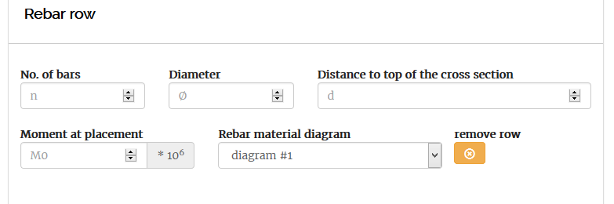

3. Reinforcement¶
Reinforcements can be added to your selected cross sections in the rebar tab. In this input tab the amount of reinforcement and the type of reinforcement material can be selected or customised to your preferences. Both the amount of reinforcement layers as the amount of reinforcement materials in a cross section are not limited.
3.1. Reinforcement rows¶
The amount of reinforcement is set with reinforcement rows. Every row represents a layer of reinforcement in the cross section. If you need reinforcement in the top and the bottom of the beam, two layers, thus two reinforcement rows are needed.
The input field of a rebar row is shown below.
Rebar row input
Every row requires the following input:
| Input field | Note |
|---|---|
| Number of bars | Amount of bars in that layer.
|
| Distance to the top of the cross section | Measured until the center of the layer.
|
| Moment at placement | The bending moment active when the
reinforcement is activated. Used for phased
loading or CFRP.
|
| Rebar material diagram | Type of stress strain diagram defined in
this tab.
|